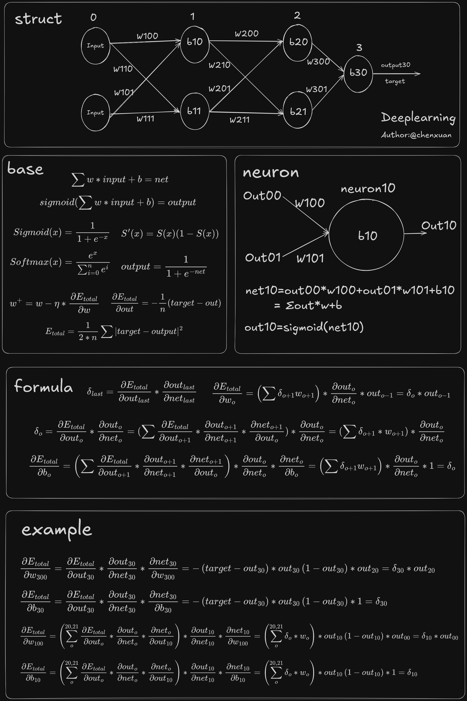

第 6 章 · 学习是怎么发生的
反向传播
第 5 章我们知道了“朝梯度反方向走”就能降低损失。可网络动辄成千上万个参数, 这么多梯度怎么算?反向传播(backpropagation)就是那个高效算法。 它常被传得很神秘,但其实只是一个东西:链式法则,加一点耐心。
读完这一章,你会明白
- 链式法则的直觉:把“最终的错”一段段分配责任回去;
- 反向传播的三步:从输出误差出发 → 逐层往回传 → 算出每个权重和偏置的梯度;
- 怎么按真实计算顺序,把配套速查图里的公式(含 w 和 b)一条条现场推出来(而不是死记);
- 为什么前向时要存下每层的 z(第 3 章那个伏笔);
- 逐行读懂真实的反向传播实现。
1. 链式法则:一段段地追责任
先看最简单的情形:一个参数 w,它影响 z,z 影响激活值 a, a 最终影响损失 L。这是一条“影响链”:
前向:w → z → a → L。反向:把 L 的误差,按每一段的局部导数连乘,传回 w。
要知道“w 动一点,L 会变多少”,链式法则说:把这条链上每一段的局部导数乘起来:
偏置 b 更省事。一个神经元里 z = Σ w·a + b, 对 b 求导时那些带 w 的项都是常数、导数为 0,只剩 b 自己,系数是 1——也就是 ∂z/∂b = 1。 于是同一条链走到最后一段换成 1,偏置的梯度就直接等于 ∂L/∂z(也就是下一节要反复出现的 δ),连输入都不用再乘:
像追查一次生产事故的责任:最终的损失(成品报废)要追到某个工人(参数)头上, 得沿着流水线一站站往回问“你这一步对最终结果影响多大”,把这些“影响”乘起来, 就得到这个工人应负的总责任。反向传播,就是给每个参数同时做这件追责。
2. 反向传播的三步
把上面的思路推广到整张多层网络,就是干净利落的三步。我们引入一个中间量 δ(delta),表示“某个神经元对最终损失的责任”。
第一步:从输出层的误差开始
反向传播的起点是最后一层。它的 δ 由“损失对输出的导数”乘上“激活函数的导数”得到:
还记得第 4 章那个美妙巧合吗?如果用 softmax + 交叉熵,这一步直接简化成 δ = p − t。
第二步:把误差一层层往回传
有了后一层的 δ,前一层的 δ 就能算出来:把后一层的责任,按连接它们的权重“分摊”回来,再乘上本层激活的导数:
第三步:用 δ 算出每个参数的梯度
一旦每个神经元都有了自己的 δ,梯度就唾手可得——权重的梯度,是“它两端的 δ 和输入”的乘积;偏置的梯度,就是 δ 本身(还记得吗?偏置那段局部导数是 1):
这三步就是反向传播的全部骨架。但光看通用公式容易“懂了又没懂”。 所以下一节,我们拿一张真实的速查图、带具体下标,把每个 δ、每根 w、每个 b 的梯度按真实计算顺序现场推一遍——你会看到,推来推去都没跳出这三步。
3. 跟着速查图,按真实计算顺序推一遍
链式法则(第 1 节)和三步框架(第 2 节)都到手了,现在拿它们去啃一张真实的速查图:把抽象公式落到具体下标上。
这张图乍看是一堵“公式墙”,分成 struct / base / neuron / formula / example 五块。
但这五块只是速查时的分区,不是计算顺序——base 把零件摊在那儿,formula 写通用模板,example 才代入具体下标。
真要看懂,得按一次训练真正发生的顺序走:前向逐个神经元算 → 到输出算损失 → 从末层往回推每个梯度 → 最后才更新参数。
下面就按这个顺序,用刚学的链式法则,把图里的公式一条条现场推出来——每冒出一条,都先说清“这一步为什么需要它”。

别按区块顺序读;跟着下面第 1~5 步走,在图上找到对应位置即可。
读图约定:先认下标(struct 区)
图左上 struct 是一张缩小版 MLP,和仓库里 MNIST 的 784→128→64→10 同类,只是画小了方便手算:
- 第 0 层(输入):2 个输入,值记作 out00、out01。
- 第 1、2 层(隐藏):各 2 个神经元 b10/b11、b20/b21。
- 第 3 层(输出):1 个神经元 b30,输出 out30,拿去和
target比。
权重 w 的三位下标 = 连到第几层 / 本层第几个神经元 / 上一层第几个输入。 例:w100 是“输入 0 → 第 1 层 0 号”那根线;w210 是“第 1 层 0 号 → 第 2 层 1 号”。 out20 则是第 2 层 0 号神经元的输出。认准这套记法,后面每条公式都能在图上指出来。
第 1 步 · 前向:一个神经元怎么算(neuron 区 + base 前两行)
前向时数据从左往右流。以第 1 层 0 号神经元为例,它只干两件事——先把连进来的输入加权求和,再过一次激活函数:
out10 = sigmoid(net10) 就是 base 里 “Σ w·input+b = net” 和 “sigmoid(net) = output” 落到 neuron10 上(图 neuron 区)
每个神经元都这么算:第 1 层算完喂给第 2 层,第 2 层喂给第 3 层,一路到 out30。
一个要记住的细节:算 net 时顺手把它存下来(代码里的 neuron_preact_,见第 3 章),第 3、4 步反向求导还要回头用它。
第 2 步 · 前向到头,量一下错得多离谱(base 的 Etotal)
数据流到输出层,out30 就是这次的预测。拿它和 target 比,用均方误差(MSE)压成一个数:
这个标量就是“错得多离谱”。想让它变小,就得知道每个权重该往哪调、调多少——也就是对每个 w 求 ∂E∂w。正是这一问,才逼出下面的反向传播。
(图 base 区还列了 Softmax:本图单输出配 MSE,用不到它;多分类如 MNIST 10 类才用 softmax 把多个 net 变成概率分布,见第 23 章。)
第 3 步 · 反向第一站:输出层的 w300 和 b30(base 的 ∂E/∂out、S′ → example A)
损失有了,现在要梯度。先挑最靠近损失的一根权重 w300——它只经一条路影响损失:w300 → net30 → out30 → E。链式法则把这条路上三段局部导数连乘:
三段挨个算,零件全在 base 区现成:
- ∂E/∂out30 = −(target − out30) —— 对第 2 步的 MSE 求导,得 base 里的 −1n(target−out),n=1 就是它。预测比目标大时为正,提示“该往下调”。
- ∂out30/∂net30 = out30(1 − out30) —— 因为 out30=sigmoid(net30),直接套 base 里的 S′(x)=S(x)(1−S(x))。
- ∂net30/∂w300 = out20 —— 因为 net30 = out20·w300 + out21·w301 + b30,对 w300 求导只剩它的系数 out20。
把前两段(只跟这个神经元自己有关、后面反复要用)打包起个名字叫 δ30,连乘就收成一行:
∂E/∂w300 = δ30 · out20 ∂E/∂b30 = δ30 这就是图 example 区头两行
那 b30 的梯度怎么来的? 一模一样的链子,只是最后一段换成偏置:
b30 → net30 → out30 → E。前两段和 w300 共用,正是 δ30;
最后一段回到第 1 步那个式子 net30 = … + b30,对 b30 求导 = 1。所以
∂E/∂b30 = δ30 · 1 = δ30——偏置梯度就等于它自己神经元的 δ,连 out 都不用乘。
图 formula 区那句 δlast = ∂E/∂outlast · ∂outlast/∂netlast,不过是给“前两段乘积”起的通用名而已。
第 4 步 · 反向往里走:隐藏层的 w100 和 b10(formula 的 δ 递推 → example B)
再挑一根深处的 w100。它离损失远,而且 out10 同时连去第 2 层两个神经元(b20、b21), 所以它对损失的影响要把两条路加起来。整条链照样连乘:
难点只在第一段 ∂E/∂out10:out10 要经 b20、b21 才影响到 E,于是把这两条路求和:
另外两段照旧:∂out10/∂net10 = out10(1−out10),∂net10/∂w100 = out00。三段合起来,同样打包出 δ10:
∂E/∂w100 = δ10 · out00 ∂E/∂b10 = δ10 这就是图 example 区后两行;formula 区通用式 δo=(Σ δo+1·wo+1)·∂outo/∂neto 就是它的模板
b10 的梯度也一并说清(这根最容易被跳过):偏置走的链子是 b10 → net10 → out10 → …… → E,
和 w100 共用后面全部路段,唯一不同还是最后一段——回到第 1 步
net10 = out00·w100 + out01·w101 + b10,
对 b10 求导,带 w 的项全变 0,只剩系数 1,即 ∂net10/∂b10 = 1。
于是 ∂E/∂b10 = δ10 · 1 = δ10。
规律一句话:任何一根偏置的梯度,都等于它所在神经元的 δ;权重才要再乘一个“上一层输入”。
算 δ10 得先有 δ20、δ21;要它们又得先有 δ30。
所以只能从末层往前一层层算——前一层刚算出的 δ,正好喂给更前面一层用。
这就是“反向”传播名字的由来,也是它高效的原因:每个 δ 只算一次,之后重复利用。
对应代码里的倒序循环 for (l = last-1; l >= 1; l--)。
第 5 步 · 梯度全到手,最后才更新(base 的 w⁺)
把每一层都这么从后往前扫一遍,网络里每个 w、每个 b 都拿到了自己的梯度。到这一步,也只有到这一步,才轮到更新参数:
注意 w⁺ 虽然写在 base 区里,却是整个流程最后才发生的一步。“反传求梯度”和“更新参数”是两码事——具体怎么挪,见第 5 章的梯度下降和第 8 章的各种优化器。
①前向 每个神经元 net→out,逐层算到 out30(neuron 区 / base 前两行) →
②损失 Etotal 量误差(base) →
③④反向 δ 从末层往前推,顺手得每根 w、b 的梯度(formula 写通用式,example 代入下标) →
⑤更新 w⁺ = w − η·∂E/∂w(base)。
速查图五块只是把这五步用到的零件分门别类摆好;MNIST 的 784→128→64→10 也只是把输入变宽、层加深,这套顺序一字不改。
4. 边看动画边走一遍
下面还是那个动画,这次请点 “切到反向传播”,再一步步点 “下一步”。 注意暖色信号是怎么从输出层反着流回输入层的——它传的不是数据,而是“误差/责任”。 你还可以 hover 公式里的彩色项,看它对应网络里的哪个节点或哪条边。
前向(蓝绿)把数据往前算;反向(暖色)把误差往回传。两趟合起来,就是一次完整的训练步。
5. 逐行读懂反向传播
真实代码就是上面三步的忠实翻译。第一步:末层的 δ。
if (use_softmax) {
delta = softmax_function_->CalcDelta(output, target, loss_function_); 1
} else {
double dL = loss_function_->DerivLoss(target, output) / out_dim; 2
delta = dL * activate_function_->DerivActivate(preact, output); 3
}
neuron_delta_[last][b][o] = delta; 4- 若是 softmax + 交叉熵,直接用那个漂亮结果 δ = p − t。
- 否则,先算损失对输出的导数
DerivLoss(第 4 章)。 - 再乘上激活函数的导数
DerivActivate。注意它同时用到了preact(也就是前向存下的 z)和output——这就是第 2、3 章埋的伏笔:有些激活(如 GELU)必须知道 z 才能求导。 - 把末层每个神经元的 δ 存进
neuron_delta_,作为往回传的起点。
第二步:把 δ 一层层往回传。
for (int l = last - 1; l >= 1; l--) { 1
for (int o = 0; o < layer_[l]; o++) {
double sum = 0.0;
for (int k = 0; k < layer_[l + 1]; k++)
sum += neuron_weight_[l + 1][k][o]
* neuron_delta_[l + 1][b][k]; 2
neuron_delta_[l][b][o] =
sum * activate_function_->DerivActivate(
neuron_preact_[l][b][o],
neuron_output_[l][b][o]); 3
}
}- 注意循环方向:
l从倒数第二层往前走到第 1 层——这就是“反向”二字的由来。 - 把后一层每个神经元的责任
δ,乘上连接的权重,累加起来——这正是公式里的 WTδ,把后层责任分摊回当前神经元。 - 再乘上当前层激活的导数,得到当前层的 δ。这一行就是 δl = (WTδ) ⊙ f′(z)。
第三步:用 δ 把梯度累加出来。
for (int l = 1; l < L; l++) {
const auto &in_vec = neuron_output_[l - 1][b];
for (int o = 0; o < layer_[l]; o++) {
double d = neuron_delta_[l][b][o];
grad_bias_[l][o] += d; 1
for (int i = 0; i < layer_[l - 1]; i++)
grad_weight_[l][o][i] += d * in_vec[i]; 2
}
}- 偏置的梯度,就是这个神经元的 δ 本身(对应公式 ∂L/∂b = δ)——和第 3 节、第 3~4 步推的完全一致,代码里就一句
grad_bias_[l][o] += d。 - 权重的梯度,是 δ 乘以“上一层对应的输入”(对应 ∂L/∂w = δ·a)。注意是
+=:一批里每个样本都累加进来,最后在ApplyGradient里除以B取平均(第 5 章)。
把这一章和前几章串起来:前向算出预测(第 3 章)→ 损失衡量错误(第 4 章)→ 反向算出每个参数的梯度(本章)→ 优化器按梯度更新参数(第 5 章)。 这四步循环成千上万次,网络就“学”会了。这就是第 0 章那个训练循环的完整真相。
反向传播只做一件事——算出每个参数的梯度(“该往哪调、调多少”的建议)。
至于真正怎么挪参数,是优化器的活儿(第 8 章):SGD 直接 w −= 学习率 × 梯度,
Adam 则用动量 + 自适应步长。所以“反传”和“更新”是两个步骤,别混为一谈——
在很多框架里它们也确实是分开的两次调用(先 backward() 求梯度,再 optimizer.step() 更新)。
小结
- 反向传播 = 链式法则:把“最终损失”按每段局部导数连乘,分配责任回每个参数。
- 三步:① 末层 δ = ∂L/∂a · f′(z)(softmax+CE 时就是 p−t);② 逐层回传 δl = (WTδ) ⊙ f′(z);③ 梯度 = δ × 输入。
- 权重梯度 = δ × 上一层输入;偏置梯度 = δ 本身(因为 ∂net/∂b = 1)。
- 配套速查图五块:struct 看结构,base/neuron 看前向,formula/example 看反向,最后 w⁺ 才是更新;按“前向→损失→反向→更新”的真实顺序读,而不是按区块。
- 反向时要用前向存下的 z(
neuron_preact_)来算激活导数。 - 前向 → 损失 → 反向 → 更新,四步一循环,反复多次即为训练。
动手与思考
问题 1:为什么叫“反向”传播?
因为计算方向和前向相反:前向是数据从输入流到输出;反向是误差(δ)从输出层一层层流回输入层。代码里那句 for (l = last-1; l >= 1; l--) 的倒序循环就是它的体现。
问题 2:速查图里 ∂E/∂w100 为什么要先算 δ10?
w100 在隐藏层,δ10 不是直接从损失来的,要把后面 b20、b21 的责任经 w200、w210 汇总回来,再乘 S′(net10)。有了 δ10 才能乘输入 out00 得到这根权重的梯度。
问题 3:同一个神经元,它的偏置 b 和权重 w 的梯度算法差在哪?
两者共用同一个 δ(前面所有路段都一样),只差最后一段局部导数:权重那段是 ∂net/∂w = 上一层的输入,所以 ∂L/∂w = δ × 输入;偏置那段是 ∂net/∂b = 1,所以 ∂L/∂b = δ × 1 = δ 本身,连输入都不用乘。
问题 4:权重 wl,o,i 的梯度由哪两样东西相乘得到?
由“这个权重指向的神经元的 δ(neuron_delta_[l][o])”乘以“它接收的那个输入(上一层的输出 in_vec[i])”。直觉:责任越大、输入越强,这个权重就该调得越多。
问题 5:如果前向时没有保存每层的 z,反向传播会怎样?
很多激活函数(尤其 GELU)的导数需要原始的 z 才能算准,缺了它就只能用粗略近似,梯度不准、训练变差。所以前向时顺手把 z 存进 neuron_preact_ 是必要的。
反向传播搞定,“学习”的完整闭环就通了。但同一条链路里,用哪种激活函数会直接影响梯度好不好传。 下一章我们就把 Sigmoid、ReLU、GELU 这些激活函数摆到一起,看它们的曲线、导数和各自的脾气。